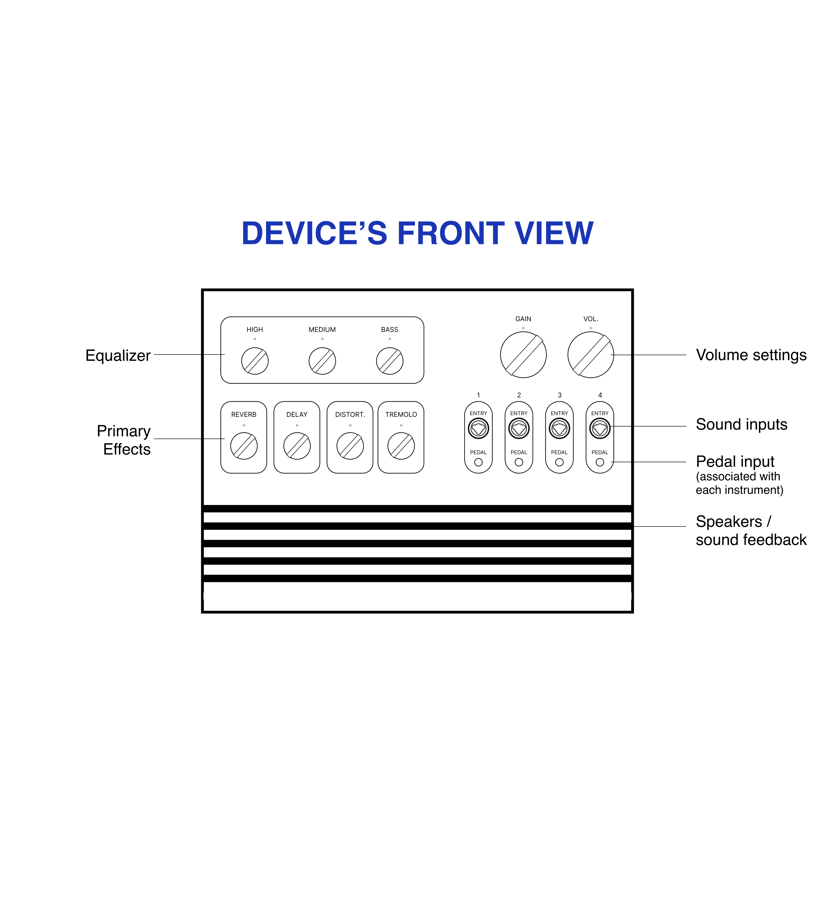
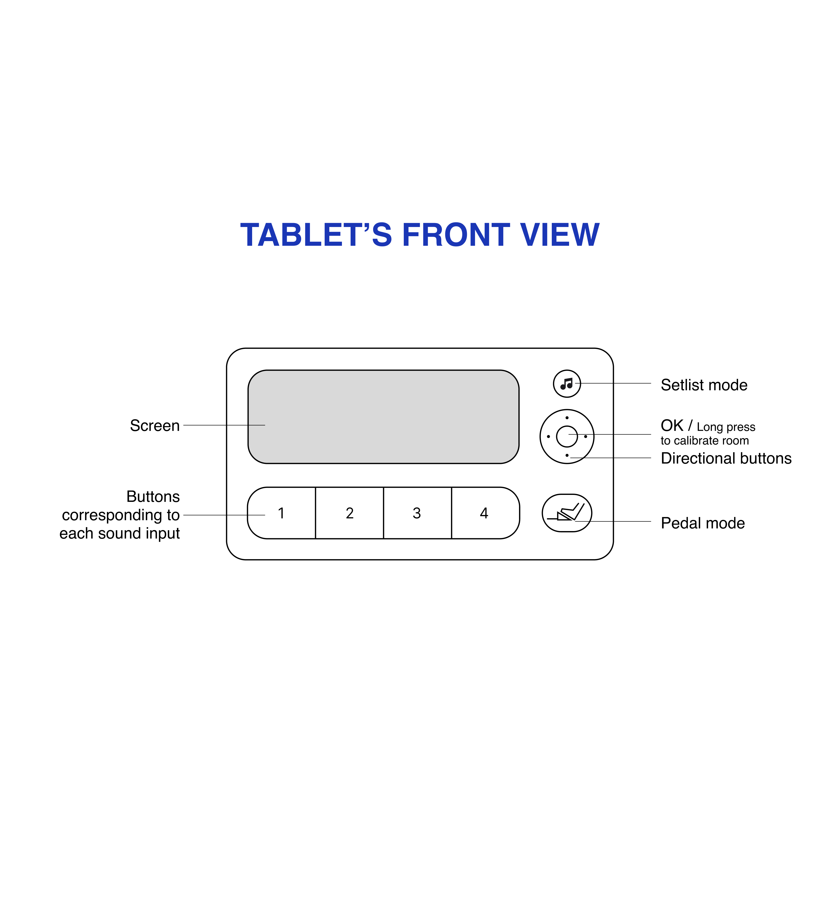
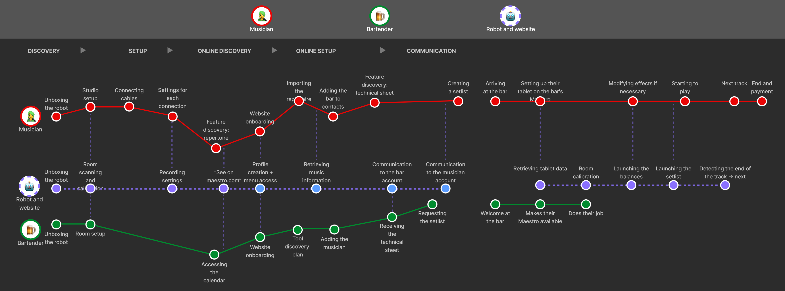
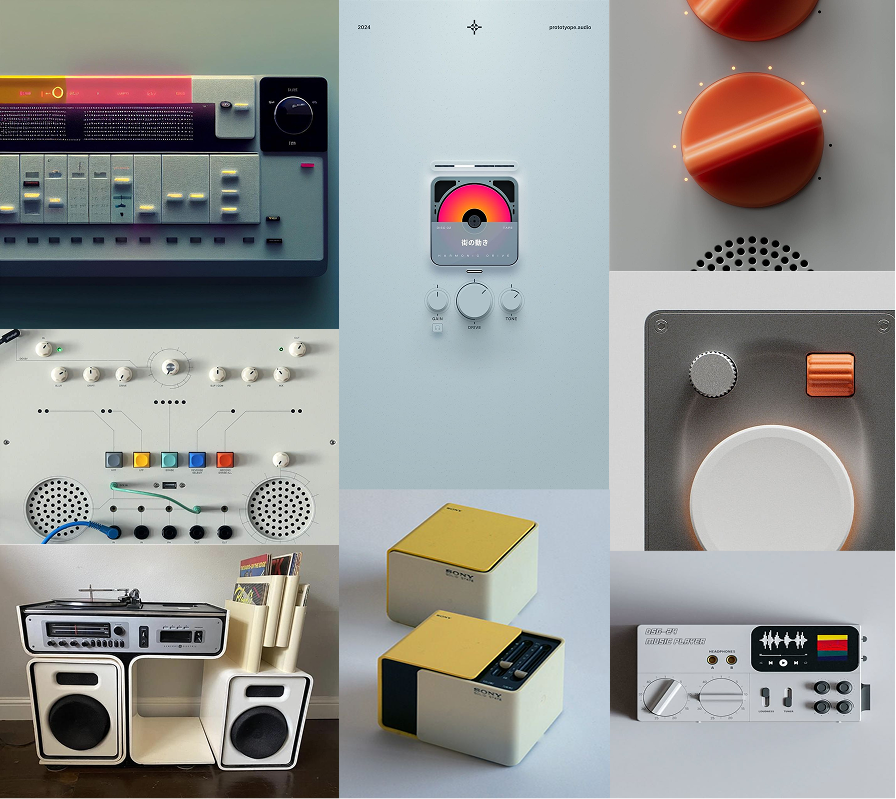
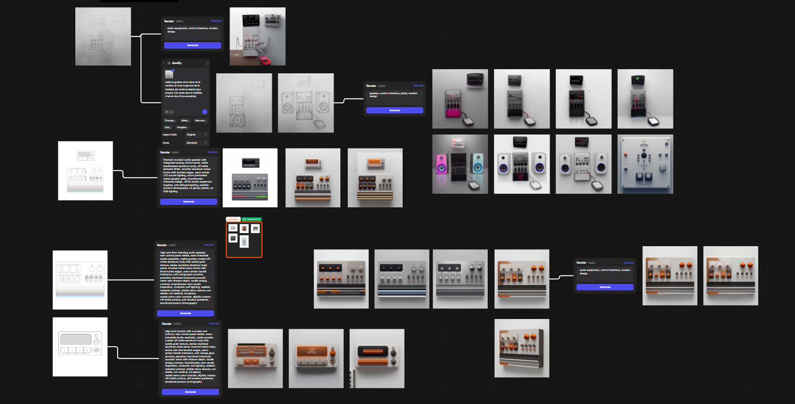
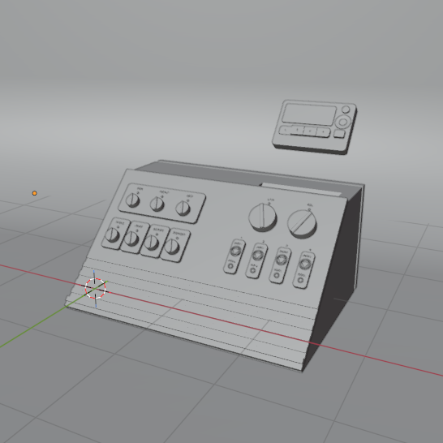
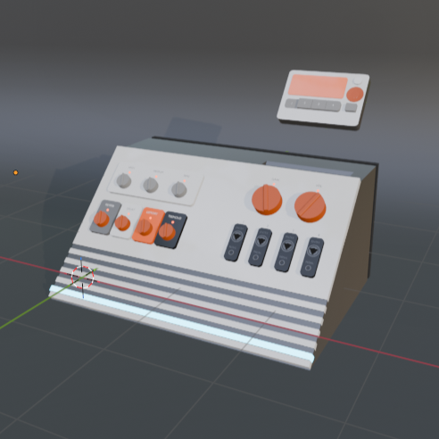
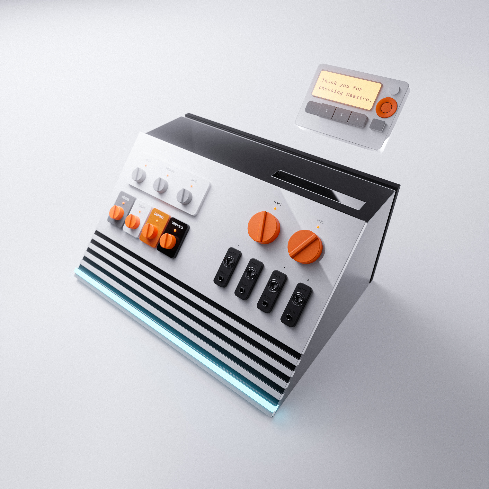

Context & Problem Statement
of independent musicians manage
their own technical logistics alone.
MIDiA Research Creator Economy Analysis.
"During rehearsals, we each bring our own amps. We could adjust our effects using software, but it's expensive and we prefer the feel of a physical object. But it's true that sound checks take forever as a result." – Baptiste, 19, guitarist in a group
of small venues and bars cite
technical complexity as their primary
barrier to hosting live music.
"We want to support local artists, but we don't have the staff or the expertise to manage a professional sound setup every night." – Sophie, 34, Bartender
Specifications & Solution
I wanted to flip the current paradigm: the venue should adapt to the instrument, not the other way around. The device meets three core requirements:
Compatible with all instruments (including vocals).
Intuitively usable, regardless of technical expertise level.
"Plug-and-play" configuration for immediate deployment.
| DEVICE FEATURES | APP FEATURES |
|---|---|
|
|
Research & Ideation
I placed all of these features on the two devices : the speaker and the tablet (which is part of the speaker but can be detached).



I developed a CMF (Colors, Materials, Finishes) mixing reassuring analog codes with modern ergonomics. These concepts served as the foundation for a rapid ideation phase on Vizcom, allowing me to explore several aesthetic directions while maintaining user interface consistency.


3D Process
While Vizcom was a powerful lever for quickly exploring aesthetic intentions, I chose to switch to Blender for the final phase. This transition to traditional 3D modeling was essential to regain total control over ergonomic precision and technical detail fidelity that AI could not yet formalize with accuracy. This project was also an opportunity to deepen my modeling skills to ensure a high-fidelity prototype, true to my initial vision.


